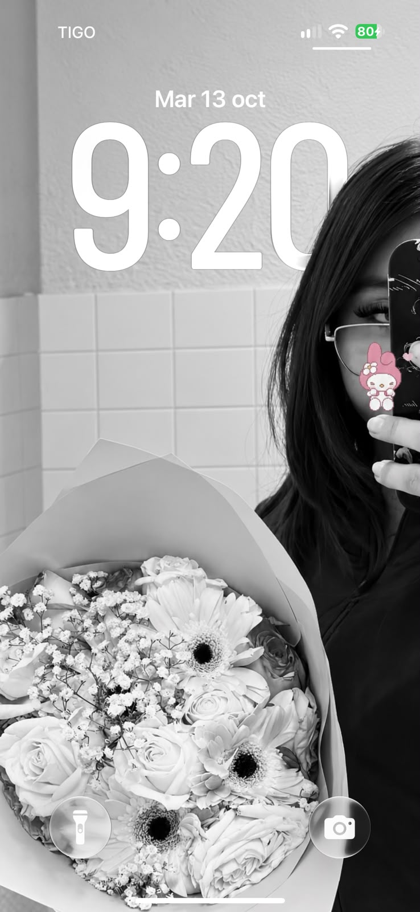

para vos,
Nao.
Me gustás.
Así de simple.
Me gustó verte, llevarte flores
y pasar ese ratito con vos.

me quedé pensando...Me preguntaste
Me preguntaste
por qué me gustás.
Y quizás en el chat no te lo dije tan bien.
Yo sí quiero
volver a verte.
Cuando vos también tengás ganas,
armamos otra salida.